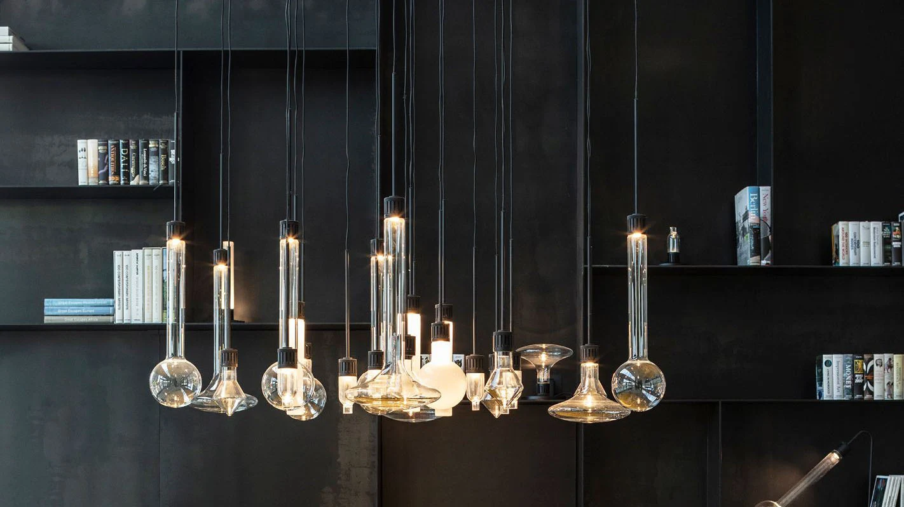
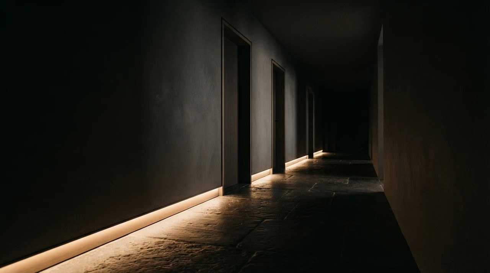

Hesaplama
Mekânın ölçüleri, yüzeyleri ve kullanımına göre aydınlatma hesapları; doğru seviye, doğru dağılım.

aydınlatma mühendisliği
Mimari için ışık sadece bir aydınlatma aracı değil; mekânı, malzemeyi ve gölgeyi var eden en kritik mimari unsurdur. Hesaplardan armatür seçimine, sahne kurgusundan uygulamaya kadar ışığı bir mühendislik hizmeti olarak tasarlıyoruz.
nasıl çalışıyoruz
Aydınlatma tasarımını ayrı satılan bir hizmet olarak değil, sunduğumuz markaların doğru hesaplanması, projelendirilmesi ve uygulanması için yürüttüğümüz bir mühendislik süreci olarak ele alıyoruz.
Mekânın ölçüleri, yüzeyleri ve kullanımına göre aydınlatma hesapları; doğru seviye, doğru dağılım.
Proje konseptine uygun armatür, optik ve yüzey seçimi; şartnameye girecek ürün listesi.
Gün boyu değişen ihtiyaçlar için ışık sahneleri; DALI ve KNX ile kontrol senaryoları.
Aydınlatma projesinin çizilmesi ve sahada markaların doğru şekilde uygulanması.
mimari aydınlatma
Işığı katı bir form gibi kurgulamak — sıva altı lineer profiller, duvar aydınlatıcılar ve heykelsi sarkıtlar mimariyle bütünleşir.
Sıva altı lineer profillerle ışık, tavan ve duvarla bütünleşen kesintisiz bir çizgiye dönüşür.
Yüzeyin dokusunu ve malzemesini ortaya çıkaran, gölgeyi tasarlayan yönlü ışık.
Mekânın merkezinde kendisi bir tasarım nesnesi olan sarkıt armatürler.
Cepheden bahçeye, mimariyi gece de okunur kılan dış mekân aydınlatması.
kontrol ve sahneler
DALI-2 ile armatür bazında hassas dimleme ve ayarlanabilir beyaz; KNX ile ışığın perdeler ve iklimle aynı senaryoda çalışması. Sabahtan geceye renk sıcaklığı, mekânın ritmine göre kendiliğinden değişir.
akıllı bina senaryoları

felsefemiz
Aydınlatmanın sanatla buluşma noktası
Hesaplardan sahne kurgusuna kadar aydınlatma mühendisliği ekibimizle çalışın.
projenizi konuşalım